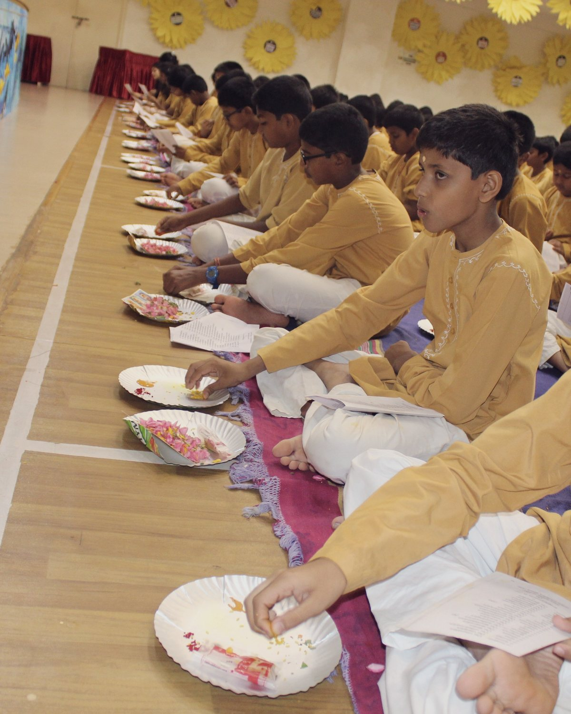

Prayer and chanting
The day begins in the prayer hall while the valley is still dark — the same fifteen minutes for a Grade V boarder and a Grade XII Diploma candidate.
Before the mountain wakes.
Student life
The boarding houses, the shape of an ordinary day, and the campus the whole of it happens on.

Student life
Live, learn, belong
Houses carry the names of India’s great teachers. Seniors and juniors share corridors by design, prep ends at nine, and the closing chant carries across the valley for six hundred boarders at once.
School life
A boarding school is a schedule. Scroll through the one the whole campus keeps.
05:3005:3021:00
The daily routine
Grades V to VIII and Grades IX to XII keep the same shape of day and run it about an hour apart. Both are drawn on one clock here, so the offset is something you can see rather than something you have to be told — point at any block to read it.
Junior SchoolGrades V to VIII
Senior SchoolGrades IX to XII
Rising and readying Jogging and sport Prayer, assembly, class Meals Academics and study Lights off

The campus
Classrooms, houses, playing fields and the dining hall sit inside one walkable boundary. The rest of the site was left alone.
Laboratories, seminar rooms and both boards’ classrooms in one building.
Reference, reading and the university-counselling desk together.
Residential houses named for the great sages of India.
Athletics track, courts, swimming pool and the yoga shala.
Built into the slope, with the valley as the back wall of the stage.
A vegetarian kitchen serving the whole residential community.
Under construction
This page is still being written. Photographs, names and figures marked in brackets are placeholders awaiting the school, and more will be added here in the weeks ahead. Tell us what is missing.